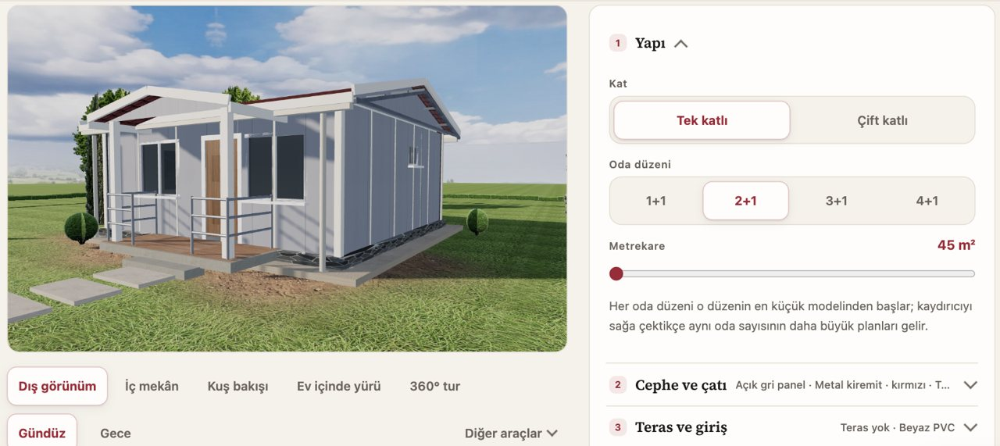
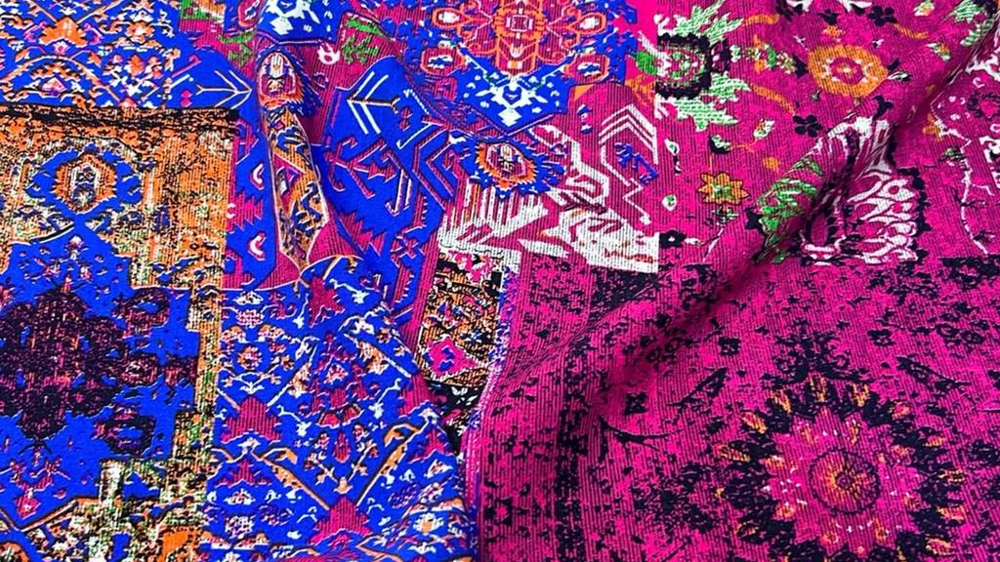
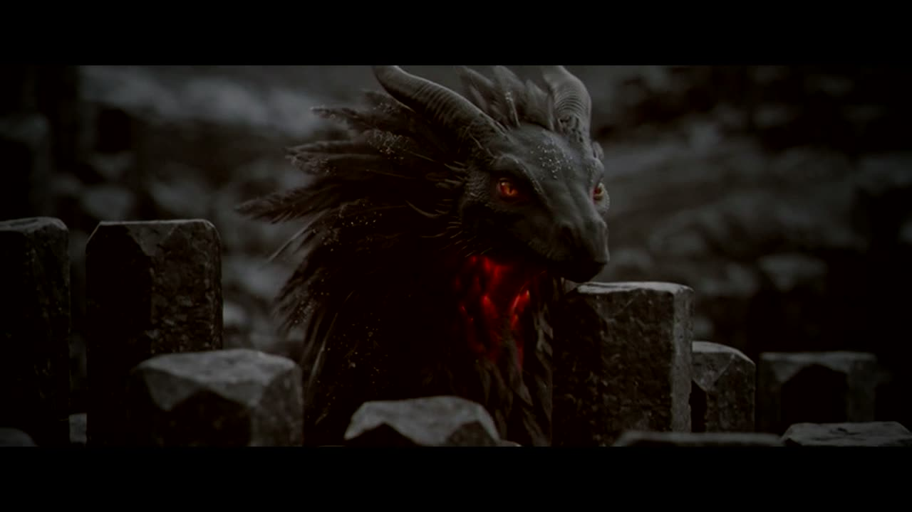

Sitenizi sıfırdan kuruyoruz ya da mevcut sitenize ziyaretçinin kullandığı, ölçülen parçalar ekliyoruz. Örneklerin hepsi şu an bu sitede çalışıyor.
Çoğu firma sitesi kartvizitin dijital hâli: açılıyor, okunuyor, kapanıyor. Biz siteyi iki işe göre kuruyoruz — aranınca bulunmak ve ziyaretçiyi bir adım ileri taşımak: mesaj, arama, teklif.
lunayapim.com'u sıfırdan biz yazdık. Beş yüzü aşkın sayfası var ve her yayından önce otomatik bir denetimden geçiyor; hata veren sürüm yayına çıkmıyor. Google dizinindeki yolculuğunu rakamlarıyla SEO örneği sayfasında yazdık. İkinci örnek trendsaphiens.com: her gün kendi yazdığımız sistemle güncellenen bir haber ve veri sitesi; yeni alan adındaki ilk haftaları burada.
Kendi sitelerimizde denediğimiz parçaları müşterilerimiz için de kuruyoruz. Üçü de çalışır hâlde; tıklayıp açabilirsiniz.

Canlıi · Prefabrik ev üreticisiZiyaretçi kat sayısını, oda düzenini, cepheyi, çatıyı ve terası seçiyor; ev tarayıcıda firmanın ölçülü plan çizimlerinden kuruluyor. İçinde yürünüyor, gece görünümüne geçiliyor, seçime en yakın model ve liste fiyatı yanda çıkıyor. Sitenin tamamını da WordPress'ten statik yapıya biz taşıdık.
Tasarlayıcıyı aç →
Tasarım önizlemesiii · Kumaş mağazasıBursa'daki kumaş mağazasının Trendyol ürünleri kartela düzeninde. Sanal mağaza turu ve kumaşı kadın ve erkek 3B mankenin üzerinde gösteren podyum; satın alma doğrudan Trendyol'daki ürüne bağlanıyor.
Vitrini aç →
Klipiii · Müzik klibigustosound'un Vogue parçası için 2:40'lık klip. Beş dünya Blender'da 3D olarak kuruldu, kurgu şarkının vuruşlarına göre biçildi; karakter yakın planları yapay zekâ desteğiyle üretildi.
Klibi izle →Aşağıdakilerin hepsini kendimiz yazdık ve hepsi şu an bu sitede çalışıyor — tıklayıp deneyebilirsiniz. Çoğu bir dış hizmete bağlı değil; sunucu, anahtar ya da aylık abonelik gerektirmiyor.
Hareketli her parça, ziyaretçinin “hareketi azalt” tercihine uyar ve sayfanın açılmasını engellemeden yüklenir. Efekt, sitenin hızından pay almamalı.
Siteniz varsa hız, dizin ve ölçüm durumu okunur; yoksa sizin işinizde aranan sayfalar çıkarılır.
Sayfa listesi, her sayfanın karşılayacağı arama ve ziyaretçiden beklenen adım — yazılı.
Metinler sizin işinizden yazılır; şablon cümle ve dolgu sayfa yok.
Alan adı, barındırma ve ölçüm hesapları sizin adınıza; her ölçüm olayı denenerek açılır.
Arama Konsolu'na gönderim, ilk hafta dizin ve tıklama okuması.
Tek seferlik
Mevcut sitenize
Kurulum + aylık
WordPress ya da hazır panel kullanan bir siteyi statik yapıya taşıyabiliyoruz. Eklenti güncellemesi, veritabanı ve güvenlik yaması yükü ortadan kalkar, sayfalar daha hızlı açılır. Eski adresler kalıcı yönlendirmeyle yenilerine bağlanır; aramadaki geçmiş kaybolmaz. İçeriği sık değiştiriyorsanız düzenleme ihtiyacını taşımadan önce konuşuyoruz — her site için statik yapı doğru cevap değil.
Hazır temayı satıp “özel tasarım” demiyoruz. Alan adını, barındırmayı ya da ölçüm hesaplarını kendi adımıza açmıyoruz. Sayfa sayısını şişirmek için birbirinin kopyası sayfalar üretmiyoruz; arama motorları bunu cezalandırıyor. “İlk sırada çıkarırız” garantisi vermiyoruz — sıralamayı arama motoru belirliyor, biz ölçüyü ve yapılacak işi yazılı veriyoruz. Siteyi ağırlaştıran, ölçülmemiş efekt koymuyoruz.
Tanıtım sitesi tek seferlik; sayfa sayısına ve eklentilere göre fiyatlanıyor. Eklentiler ayrı ayrı da alınabiliyor. Ne istediğinizi ya da mevcut sitenizin adresini yazın, aynı gün net bir aralık verelim; diğer hizmetlerin bantları fiyat sayfamızda.
Tanıtım sitelerinin çoğu için statik yapı: sayfalar önceden üretilir ve dağıtım ağından sunulur. Hızlı açılır, veritabanı ve eklenti güncellemesi gerektirmez. İçeriği sık değiştiren bir ekibiniz varsa düzenleme yöntemini baştan birlikte seçiyoruz.
Çoğu durumda evet. Tasarım stüdyosu, site asistanı, kaydırıcı ve sahneler sayfaya bir betik ve bir yer tutucu olarak eklenir; sitenizin geri kalanına dokunulmaz. Önce altyapınıza bakıp olup olmayacağını yazılı olarak söylüyoruz.
Bu sitedeki değil: cevaplar sitenin kendi metinlerinden çıkıyor, soru tarayıcıdan dışarı gitmiyor, aylık ücreti yok. Dış bir dil modeline bağlanması istenirse maliyeti ve verinin nereye gittiği ayrıca konuşulur.
Söz vermiyoruz. Teknik altyapıyı eksiksiz kuruyor, yayından sonra Arama Konsolu'ndan dizin ve tıklamayı okuyoruz. Rekabetli aramalarda sıralamayı belirleyenlerin bir kısmı — başka sitelerden gelen bağlantılar, işletme profili, yorumlar — sitenin dışında; bunları da açıkça yazıyoruz. Kendi sitemizin rakamları <a href="seo-ornegi-lunayapim">SEO örneği</a> sayfasında.
Sizin. Alan adı, barındırma, Arama Konsolu ve Analytics hesapları sizin adınıza açılır, bize yetki verilir. Kaynak dosyalar teslimde sizde kalır; ayrıldığınızda site sizinle gider.
İsterseniz evet. İşinizi sizden dinleyip sizin rakamlarınızla yazıyoruz; doğrulayamadığımız iddia sitede yer almıyor. Görsel ve video tarafı da aynı ekipte: <a href="urun-animasyon">ürün animasyonu</a>, <a href="drone-fpv">drone çekimi</a>, <a href="isletme-tanitim">tanıtım videosu</a>.
İletişim
Adresinizi ya da ne istediğinizi yazın; neye bakacağımızı ve hangi eklentinin işinize yarayacağını aynı gün söyleyelim.